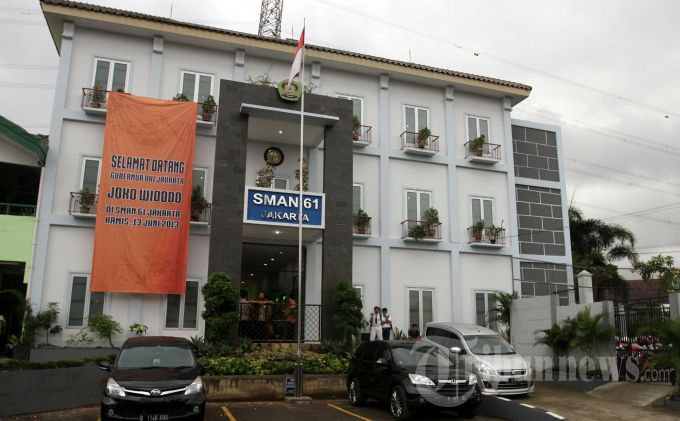

Selamat Datang di SMAN 61 Jakarta Timur
SMAN 61 Jakarta Timur adalah sekolah menengah atas yang memiliki komitmen tinggi dalam mencetak generasi unggul.
SMAN 61 Jakarta Timur adalah sekolah menengah atas yang memiliki komitmen tinggi dalam mencetak generasi unggul.
SMAN 61 Jakarta Timur telah berdiri sejak tahun 1980 dan memiliki sejarah panjang dalam memberikan pendidikan berkualitas tinggi kepada siswa-siswinya. Terletak di Jakarta Timur, sekolah ini dikenal dengan berbagai prestasi akademik dan non-akademik yang membanggakan. SMAN 61 memiliki fasilitas lengkap seperti laboratorium, perpustakaan modern, dan ruang kelas yang nyaman untuk mendukung proses pembelajaran.
Selain prestasi akademik, SMAN 61 juga aktif dalam berbagai kegiatan ekstrakurikuler yang melibatkan siswa dalam berbagai bidang seperti olahraga, seni, dan sains. Sekolah ini selalu berusaha untuk memberikan yang terbaik bagi seluruh komunitas sekolah, termasuk siswa, guru, dan orang tua.
Visi dan misi sekolah adalah menciptakan generasi yang tidak hanya unggul secara akademik, tetapi juga memiliki karakter yang kuat dan siap bersaing di tingkat nasional maupun internasional.
"Menjadi sekolah unggul yang menghasilkan siswa berkarakter, berprestasi, dan siap menghadapi tantangan global dengan semangat kebangsaan dan keunggulan akademik."